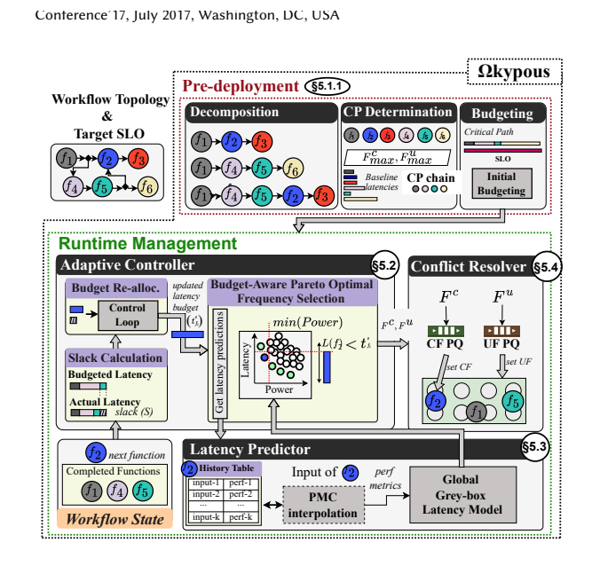
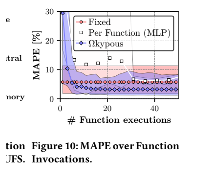
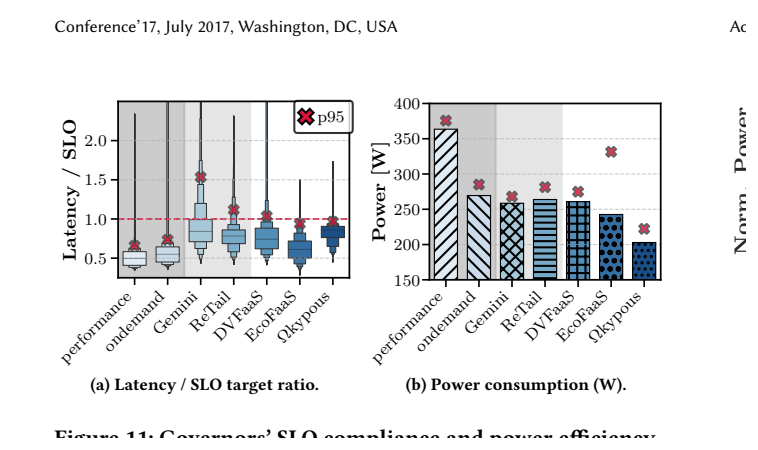

Ωkypous：原图原表阅读索引#
整理日期：2026-11-05。读者原创中文解读；原图归论文作者／出版方。未运行作者实验，不是独立复现。
覆盖范围： 本版本正文中识别到的18项图、表或算法；保留原编号。关键项已裁图并在技术精读相应段落出现，未内嵌的项可点PDF页链接查看，不上传整篇PDF。
统计总边界： Azure trace源、缩放、20分钟窗口聚类和160条工作流是负载设计，不等于160台独立硬件。以p95设SLO与真实hard deadline不同。功率减少与SLO违约要成对给，1.8%并非零违约。论文power-cap图文中40/42.5/45W的loose/strict标签顺序可疑，未核清时不把标签当工程限值复制。
Fig1：频率对尾延迟和功率#
- 本项回答的问题： 频率对尾延迟和功率，用于支撑这条方法或实验链中的具体环节。
- 组成、坐标和对照： 先读图题、图例、坐标/表头与单位，再在同一负载和同一基线内比较。视频/图遍历的计算与访存敏感性不同。 按原图／表标示的单位与归一化基准阅读；不将不同子图或不同分母的柱高直接相除。 颜色按原图图例辨认，不能把同色跨图视为同一组。
- 阅读顺序与统计单位： 先看设定、单位和图例，再看趋势与作者正文。重复次数及采样独立性参见本篇技术精读统计节；没有为该图定位到的误差线定义／独立重复数，不另行猜测。
- 直接观察： 视频/图遍历的计算与访存敏感性不同。
- 作者解释的范围： 原文以该图／表作为上述观察的结构说明或实验支撑，需连同对应页正文读取；本索引不额外替作者推导因果机制。
- 独立判断（AI分析）： 本项只支撑原文所列平台和配置；不证明E902可直接复用这些数值。
- 证据链位置： 性能验证／定量或示例证据，需结合实验条件。它支持本文具体条件下的实现或结果，不单独完成跨平台验证。
- 结论与强度： 可复述“视频/图遍历的计算与访存敏感性不同。”；对图内描述的核查可信度高，对未做独立实验的泛化判断为中或无法判断。不能得出的结论是“本项只支撑原文所列平台和配置；不证明E902可直接复用这些数值。”所排除的外推。
Fig2：Pareto空间#
- 本项回答的问题： Pareto空间，用于支撑这条方法或实验链中的具体环节。
- 组成、坐标和对照： 先读图题、图例、坐标/表头与单位，再在同一负载和同一基线内比较。联合调频扩大可选择的功率—时延点。 按原图／表标示的单位与归一化基准阅读；不将不同子图或不同分母的柱高直接相除。 颜色按原图图例辨认，不能把同色跨图视为同一组。
- 阅读顺序与统计单位： 先看设定、单位和图例，再看趋势与作者正文。重复次数及采样独立性参见本篇技术精读统计节；没有为该图定位到的误差线定义／独立重复数，不另行猜测。
- 直接观察： 联合调频扩大可选择的功率—时延点。
- 作者解释的范围： 原文以该图／表作为上述观察的结构说明或实验支撑，需连同对应页正文读取；本索引不额外替作者推导因果机制。
- 独立判断（AI分析）： 本项只支撑原文所列平台和配置；不证明E902可直接复用这些数值。
- 证据链位置： 性能验证／定量或示例证据，需结合实验条件。它支持本文具体条件下的实现或结果，不单独完成跨平台验证。
- 结论与强度： 可复述“联合调频扩大可选择的功率—时延点。”；对图内描述的核查可信度高，对未做独立实验的泛化判断为中或无法判断。不能得出的结论是“本项只支撑原文所列平台和配置；不证明E902可直接复用这些数值。”所排除的外推。
Fig3：运行时变异#
- 本项回答的问题： 运行时变异，用于支撑这条方法或实验链中的具体环节。
- 组成、坐标和对照： 先读图题、图例、坐标/表头与单位，再在同一负载和同一基线内比较。同函数存在时延变动，模型需反馈。 按原图／表标示的单位与归一化基准阅读；不将不同子图或不同分母的柱高直接相除。 颜色按原图图例辨认，不能把同色跨图视为同一组。
- 阅读顺序与统计单位： 先看设定、单位和图例，再看趋势与作者正文。重复次数及采样独立性参见本篇技术精读统计节；没有为该图定位到的误差线定义／独立重复数，不另行猜测。
- 直接观察： 同函数存在时延变动，模型需反馈。
- 作者解释的范围： 原文以该图／表作为上述观察的结构说明或实验支撑，需连同对应页正文读取；本索引不额外替作者推导因果机制。
- 独立判断（AI分析）： 本项只支撑原文所列平台和配置；不证明E902可直接复用这些数值。
- 证据链位置： 性能验证／定量或示例证据，需结合实验条件。它支持本文具体条件下的实现或结果，不单独完成跨平台验证。
- 结论与强度： 可复述“同函数存在时延变动，模型需反馈。”；对图内描述的核查可信度高，对未做独立实验的泛化判断为中或无法判断。不能得出的结论是“本项只支撑原文所列平台和配置；不证明E902可直接复用这些数值。”所排除的外推。
Fig4：输入与预测挑战#
- 本项回答的问题： 输入与预测挑战，用于支撑这条方法或实验链中的具体环节。
- 组成、坐标和对照： 先读图题、图例、坐标/表头与单位，再在同一负载和同一基线内比较。图规模/视频帧数等输入改变工作量。 按原图／表标示的单位与归一化基准阅读；不将不同子图或不同分母的柱高直接相除。 颜色按原图图例辨认，不能把同色跨图视为同一组。
- 阅读顺序与统计单位： 先看设定、单位和图例，再看趋势与作者正文。重复次数及采样独立性参见本篇技术精读统计节；没有为该图定位到的误差线定义／独立重复数，不另行猜测。
- 直接观察： 图规模/视频帧数等输入改变工作量。
- 作者解释的范围： 原文以该图／表作为上述观察的结构说明或实验支撑，需连同对应页正文读取；本索引不额外替作者推导因果机制。
- 独立判断（AI分析）： 本项只支撑原文所列平台和配置；不证明E902可直接复用这些数值。
- 证据链位置： 性能验证／定量或示例证据，需结合实验条件。它支持本文具体条件下的实现或结果，不单独完成跨平台验证。
- 结论与强度： 可复述“图规模/视频帧数等输入改变工作量。”；对图内描述的核查可信度高，对未做独立实验的泛化判断为中或无法判断。不能得出的结论是“本项只支撑原文所列平台和配置；不证明E902可直接复用这些数值。”所排除的外推。
Fig5：工作流优化步骤#
- 本项回答的问题： 工作流优化步骤，用于支撑这条方法或实验链中的具体环节。
- 组成、坐标和对照： 先读图题、图例、坐标/表头与单位，再在同一负载和同一基线内比较。先预算、再运行时反馈与选档。 按原图／表标示的单位与归一化基准阅读；不将不同子图或不同分母的柱高直接相除。 颜色按原图图例辨认，不能把同色跨图视为同一组。
- 阅读顺序与统计单位： 先看设定、单位和图例，再看趋势与作者正文。重复次数及采样独立性参见本篇技术精读统计节；没有为该图定位到的误差线定义／独立重复数，不另行猜测。
- 直接观察： 先预算、再运行时反馈与选档。
- 作者解释的范围： 原文以该图／表作为上述观察的结构说明或实验支撑，需连同对应页正文读取；本索引不额外替作者推导因果机制。
- 独立判断（AI分析）： 本项只支撑原文所列平台和配置；不证明E902可直接复用这些数值。
- 证据链位置： 性能验证／定量或示例证据，需结合实验条件。它支持本文具体条件下的实现或结果，不单独完成跨平台验证。
- 结论与强度： 可复述“先预算、再运行时反馈与选档。”；对图内描述的核查可信度高，对未做独立实验的泛化判断为中或无法判断。不能得出的结论是“本项只支撑原文所列平台和配置；不证明E902可直接复用这些数值。”所排除的外推。
Fig6：Ωkypous框图#


- 本项回答的问题： Ωkypous框图，用于支撑这条方法或实验链中的具体环节。
- 组成、坐标和对照： 先读图题、图例、坐标/表头与单位，再在同一负载和同一基线内比较。预测器、控制器、冲突协调器职责不同。 结构／流程类没有统一数值坐标；箭头表示数据或控制关系，不表示统计因果。 颜色按原图图例辨认，不能把同色跨图视为同一组。
- 阅读顺序与统计单位： 先看设定、单位和图例，再看趋势与作者正文。重复次数及采样独立性参见本篇技术精读统计节；没有为该图定位到的误差线定义／独立重复数，不另行猜测。
- 直接观察： 预测器、控制器、冲突协调器职责不同。
- 作者解释的范围： 原文以该图／表作为上述观察的结构说明或实验支撑，需连同对应页正文读取；本索引不额外替作者推导因果机制。
- 独立判断（AI分析）： 本项只支撑原文所列平台和配置；不证明E902可直接复用这些数值。
- 证据链位置： 方法／系统实现说明。它支持本文具体条件下的实现或结果，不单独完成跨平台验证。
- 结论与强度： 可复述“预测器、控制器、冲突协调器职责不同。”；对图内描述的核查可信度高，对未做独立实验的泛化判断为中或无法判断。不能得出的结论是“本项只支撑原文所列平台和配置；不证明E902可直接复用这些数值。”所排除的外推。
Fig7：PMC相关性#
- 本项回答的问题： PMC相关性，用于支撑这条方法或实验链中的具体环节。
- 组成、坐标和对照： 先读图题、图例、坐标/表头与单位，再在同一负载和同一基线内比较。相关性用于选特征，非直接因果证明。 按原图／表标示的单位与归一化基准阅读；不将不同子图或不同分母的柱高直接相除。 颜色按原图图例辨认，不能把同色跨图视为同一组。
- 阅读顺序与统计单位： 先看设定、单位和图例，再看趋势与作者正文。重复次数及采样独立性参见本篇技术精读统计节；没有为该图定位到的误差线定义／独立重复数，不另行猜测。
- 直接观察： 相关性用于选特征，非直接因果证明。
- 作者解释的范围： 原文以该图／表作为上述观察的结构说明或实验支撑，需连同对应页正文读取；本索引不额外替作者推导因果机制。
- 独立判断（AI分析）： 本项只支撑原文所列平台和配置；不证明E902可直接复用这些数值。
- 证据链位置： 性能验证／定量或示例证据，需结合实验条件。它支持本文具体条件下的实现或结果，不单独完成跨平台验证。
- 结论与强度： 可复述“相关性用于选特征，非直接因果证明。”；对图内描述的核查可信度高，对未做独立实验的泛化判断为中或无法判断。不能得出的结论是“本项只支撑原文所列平台和配置；不证明E902可直接复用这些数值。”所排除的外推。
Fig8：PMC贡献#
- 本项回答的问题： PMC贡献，用于支撑这条方法或实验链中的具体环节。
- 组成、坐标和对照： 先读图题、图例、坐标/表头与单位，再在同一负载和同一基线内比较。Core与Memory分项来自拟合，不能当独立电测比例。 按原图／表标示的单位与归一化基准阅读；不将不同子图或不同分母的柱高直接相除。 颜色按原图图例辨认，不能把同色跨图视为同一组。
- 阅读顺序与统计单位： 先看设定、单位和图例，再看趋势与作者正文。重复次数及采样独立性参见本篇技术精读统计节；没有为该图定位到的误差线定义／独立重复数，不另行猜测。
- 直接观察： Core与Memory分项来自拟合，不能当独立电测比例。
- 作者解释的范围： 原文以该图／表作为上述观察的结构说明或实验支撑，需连同对应页正文读取；本索引不额外替作者推导因果机制。
- 独立判断（AI分析）： 本项只支撑原文所列平台和配置；不证明E902可直接复用这些数值。
- 证据链位置： 性能验证／定量或示例证据，需结合实验条件。它支持本文具体条件下的实现或结果，不单独完成跨平台验证。
- 结论与强度： 可复述“Core与Memory分项来自拟合，不能当独立电测比例。”；对图内描述的核查可信度高，对未做独立实验的泛化判断为中或无法判断。不能得出的结论是“本项只支撑原文所列平台和配置；不证明E902可直接复用这些数值。”所排除的外推。
Fig9：各域时延贡献#
- 本项回答的问题： 各域时延贡献，用于支撑这条方法或实验链中的具体环节。
- 组成、坐标和对照： 先读图题、图例、坐标/表头与单位，再在同一负载和同一基线内比较。选频会改变瓶颈，模型必须反映。 按原图／表标示的单位与归一化基准阅读；不将不同子图或不同分母的柱高直接相除。 颜色按原图图例辨认，不能把同色跨图视为同一组。
- 阅读顺序与统计单位： 先看设定、单位和图例，再看趋势与作者正文。重复次数及采样独立性参见本篇技术精读统计节；没有为该图定位到的误差线定义／独立重复数，不另行猜测。
- 直接观察： 选频会改变瓶颈，模型必须反映。
- 作者解释的范围： 原文以该图／表作为上述观察的结构说明或实验支撑，需连同对应页正文读取；本索引不额外替作者推导因果机制。
- 独立判断（AI分析）： 本项只支撑原文所列平台和配置；不证明E902可直接复用这些数值。
- 证据链位置： 性能验证／定量或示例证据，需结合实验条件。它支持本文具体条件下的实现或结果，不单独完成跨平台验证。
- 结论与强度： 可复述“选频会改变瓶颈，模型必须反映。”；对图内描述的核查可信度高，对未做独立实验的泛化判断为中或无法判断。不能得出的结论是“本项只支撑原文所列平台和配置；不证明E902可直接复用这些数值。”所排除的外推。
Fig10：少样本MAPE#


- 本项回答的问题： 少样本MAPE，用于支撑这条方法或实验链中的具体环节。
- 组成、坐标和对照： 先读图题、图例、坐标/表头与单位，再在同一负载和同一基线内比较。看随调用数收敛，不取末值冒充首调用效果。 按原图／表标示的单位与归一化基准阅读；不将不同子图或不同分母的柱高直接相除。 颜色按原图图例辨认，不能把同色跨图视为同一组。
- 阅读顺序与统计单位： 先看设定、单位和图例，再看趋势与作者正文。重复次数及采样独立性参见本篇技术精读统计节；没有为该图定位到的误差线定义／独立重复数，不另行猜测。
- 直接观察： 看随调用数收敛，不取末值冒充首调用效果。
- 作者解释的范围： 原文以该图／表作为上述观察的结构说明或实验支撑，需连同对应页正文读取；本索引不额外替作者推导因果机制。
- 独立判断（AI分析）： 本项只支撑原文所列平台和配置；不证明E902可直接复用这些数值。
- 证据链位置： 性能验证／定量或示例证据，需结合实验条件。它支持本文具体条件下的实现或结果，不单独完成跨平台验证。
- 结论与强度： 可复述“看随调用数收敛，不取末值冒充首调用效果。”；对图内描述的核查可信度高，对未做独立实验的泛化判断为中或无法判断。不能得出的结论是“本项只支撑原文所列平台和配置；不证明E902可直接复用这些数值。”所排除的外推。
Fig11：160工作流服务质量/功率#


- 本项回答的问题： 160工作流服务质量/功率，用于支撑这条方法或实验链中的具体环节。
- 组成、坐标和对照： 先读图题、图例、坐标/表头与单位，再在同一负载和同一基线内比较。功率和SLO违约成对比较。 按原图／表标示的单位与归一化基准阅读；不将不同子图或不同分母的柱高直接相除。 颜色按原图图例辨认，不能把同色跨图视为同一组。
- 阅读顺序与统计单位： 先看设定、单位和图例，再看趋势与作者正文。重复次数及采样独立性参见本篇技术精读统计节；没有为该图定位到的误差线定义／独立重复数，不另行猜测。
- 直接观察： 功率和SLO违约成对比较。
- 作者解释的范围： 原文以该图／表作为上述观察的结构说明或实验支撑，需连同对应页正文读取；本索引不额外替作者推导因果机制。
- 独立判断（AI分析）： 本项只支撑原文所列平台和配置；不证明E902可直接复用这些数值。
- 证据链位置： 性能验证／定量或示例证据，需结合实验条件。它支持本文具体条件下的实现或结果，不单独完成跨平台验证。
- 结论与强度： 可复述“功率和SLO违约成对比较。”；对图内描述的核查可信度高，对未做独立实验的泛化判断为中或无法判断。不能得出的结论是“本项只支撑原文所列平台和配置；不证明E902可直接复用这些数值。”所排除的外推。
Fig12：违约率#
- 本项回答的问题： 违约率，用于支撑这条方法或实验链中的具体环节。
- 组成、坐标和对照： 先读图题、图例、坐标/表头与单位，再在同一负载和同一基线内比较。1.8%不是零，低功率基线服务质量不同。 按原图／表标示的单位与归一化基准阅读；不将不同子图或不同分母的柱高直接相除。 颜色按原图图例辨认，不能把同色跨图视为同一组。
- 阅读顺序与统计单位： 先看设定、单位和图例，再看趋势与作者正文。重复次数及采样独立性参见本篇技术精读统计节；没有为该图定位到的误差线定义／独立重复数，不另行猜测。
- 直接观察： 1.8%不是零，低功率基线服务质量不同。
- 作者解释的范围： 原文以该图／表作为上述观察的结构说明或实验支撑，需连同对应页正文读取；本索引不额外替作者推导因果机制。
- 独立判断（AI分析）： 本项只支撑原文所列平台和配置；不证明E902可直接复用这些数值。
- 证据链位置： 性能验证／定量或示例证据，需结合实验条件。它支持本文具体条件下的实现或结果，不单独完成跨平台验证。
- 结论与强度： 可复述“1.8%不是零，低功率基线服务质量不同。”；对图内描述的核查可信度高，对未做独立实验的泛化判断为中或无法判断。不能得出的结论是“本项只支撑原文所列平台和配置；不证明E902可直接复用这些数值。”所排除的外推。
Fig13：等延迟/功率分布#
- 本项回答的问题： 等延迟/功率分布，用于支撑这条方法或实验链中的具体环节。
- 组成、坐标和对照： 先读图题、图例、坐标/表头与单位，再在同一负载和同一基线内比较。明确归一化和SLO设定后看CDF。 按原图／表标示的单位与归一化基准阅读；不将不同子图或不同分母的柱高直接相除。 颜色按原图图例辨认，不能把同色跨图视为同一组。
- 阅读顺序与统计单位： 先看设定、单位和图例，再看趋势与作者正文。重复次数及采样独立性参见本篇技术精读统计节；没有为该图定位到的误差线定义／独立重复数，不另行猜测。
- 直接观察： 明确归一化和SLO设定后看CDF。
- 作者解释的范围： 原文以该图／表作为上述观察的结构说明或实验支撑，需连同对应页正文读取；本索引不额外替作者推导因果机制。
- 独立判断（AI分析）： 本项只支撑原文所列平台和配置；不证明E902可直接复用这些数值。
- 证据链位置： 性能验证／定量或示例证据，需结合实验条件。它支持本文具体条件下的实现或结果，不单独完成跨平台验证。
- 结论与强度： 可复述“明确归一化和SLO设定后看CDF。”；对图内描述的核查可信度高，对未做独立实验的泛化判断为中或无法判断。不能得出的结论是“本项只支撑原文所列平台和配置；不证明E902可直接复用这些数值。”所排除的外推。
Fig14：功率帽场景#
- 本项回答的问题： 功率帽场景，用于支撑这条方法或实验链中的具体环节。
- 组成、坐标和对照： 先读图题、图例、坐标/表头与单位，再在同一负载和同一基线内比较。40/42.5/45W标签先核对，不移植。 按原图／表标示的单位与归一化基准阅读；不将不同子图或不同分母的柱高直接相除。 颜色按原图图例辨认，不能把同色跨图视为同一组。
- 阅读顺序与统计单位： 先看设定、单位和图例，再看趋势与作者正文。重复次数及采样独立性参见本篇技术精读统计节；没有为该图定位到的误差线定义／独立重复数，不另行猜测。
- 直接观察： 40/42.5/45W标签先核对，不移植。
- 作者解释的范围： 原文以该图／表作为上述观察的结构说明或实验支撑，需连同对应页正文读取；本索引不额外替作者推导因果机制。
- 独立判断（AI分析）： 本项只支撑原文所列平台和配置；不证明E902可直接复用这些数值。
- 证据链位置： 性能验证／定量或示例证据，需结合实验条件。它支持本文具体条件下的实现或结果，不单独完成跨平台验证。
- 结论与强度： 可复述“40/42.5/45W标签先核对，不移植。”；对图内描述的核查可信度高，对未做独立实验的泛化判断为中或无法判断。不能得出的结论是“本项只支撑原文所列平台和配置；不证明E902可直接复用这些数值。”所排除的外推。
Fig15：请求率与频率/尾延迟#
- 本项回答的问题： 请求率与频率/尾延迟，用于支撑这条方法或实验链中的具体环节。
- 组成、坐标和对照： 先读图题、图例、坐标/表头与单位，再在同一负载和同一基线内比较。更高请求率通常需更高频率。 按原图／表标示的单位与归一化基准阅读；不将不同子图或不同分母的柱高直接相除。 颜色按原图图例辨认，不能把同色跨图视为同一组。
- 阅读顺序与统计单位： 先看设定、单位和图例，再看趋势与作者正文。重复次数及采样独立性参见本篇技术精读统计节；没有为该图定位到的误差线定义／独立重复数，不另行猜测。
- 直接观察： 更高请求率通常需更高频率。
- 作者解释的范围： 原文以该图／表作为上述观察的结构说明或实验支撑，需连同对应页正文读取；本索引不额外替作者推导因果机制。
- 独立判断（AI分析）： 本项只支撑原文所列平台和配置；不证明E902可直接复用这些数值。
- 证据链位置： 性能验证／定量或示例证据，需结合实验条件。它支持本文具体条件下的实现或结果，不单独完成跨平台验证。
- 结论与强度： 可复述“更高请求率通常需更高频率。”；对图内描述的核查可信度高，对未做独立实验的泛化判断为中或无法判断。不能得出的结论是“本项只支撑原文所列平台和配置；不证明E902可直接复用这些数值。”所排除的外推。
Fig16：共享频域冲突#
- 本项回答的问题： 共享频域冲突，用于支撑这条方法或实验链中的具体环节。
- 组成、坐标和对照： 先读图题、图例、坐标/表头与单位，再在同一负载和同一基线内比较。每线程请求不等于可独立物理执行。 按原图／表标示的单位与归一化基准阅读；不将不同子图或不同分母的柱高直接相除。 颜色按原图图例辨认，不能把同色跨图视为同一组。
- 阅读顺序与统计单位： 先看设定、单位和图例，再看趋势与作者正文。重复次数及采样独立性参见本篇技术精读统计节；没有为该图定位到的误差线定义／独立重复数，不另行猜测。
- 直接观察： 每线程请求不等于可独立物理执行。
- 作者解释的范围： 原文以该图／表作为上述观察的结构说明或实验支撑，需连同对应页正文读取；本索引不额外替作者推导因果机制。
- 独立判断（AI分析）： 本项只支撑原文所列平台和配置；不证明E902可直接复用这些数值。
- 证据链位置： 性能验证／定量或示例证据，需结合实验条件。它支持本文具体条件下的实现或结果，不单独完成跨平台验证。
- 结论与强度： 可复述“每线程请求不等于可独立物理执行。”；对图内描述的核查可信度高，对未做独立实验的泛化判断为中或无法判断。不能得出的结论是“本项只支撑原文所列平台和配置；不证明E902可直接复用这些数值。”所排除的外推。
Fig17：共存干扰功率#
- 本项回答的问题： 共存干扰功率，用于支撑这条方法或实验链中的具体环节。
- 组成、坐标和对照： 先读图题、图例、坐标/表头与单位，再在同一负载和同一基线内比较。管理开销和干扰已纳入此案例。 按原图／表标示的单位与归一化基准阅读；不将不同子图或不同分母的柱高直接相除。 颜色按原图图例辨认，不能把同色跨图视为同一组。
- 阅读顺序与统计单位： 先看设定、单位和图例，再看趋势与作者正文。重复次数及采样独立性参见本篇技术精读统计节；没有为该图定位到的误差线定义／独立重复数，不另行猜测。
- 直接观察： 管理开销和干扰已纳入此案例。
- 作者解释的范围： 原文以该图／表作为上述观察的结构说明或实验支撑，需连同对应页正文读取；本索引不额外替作者推导因果机制。
- 独立判断（AI分析）： 本项只支撑原文所列平台和配置；不证明E902可直接复用这些数值。
- 证据链位置： 性能验证／定量或示例证据，需结合实验条件。它支持本文具体条件下的实现或结果，不单独完成跨平台验证。
- 结论与强度： 可复述“管理开销和干扰已纳入此案例。”；对图内描述的核查可信度高，对未做独立实验的泛化判断为中或无法判断。不能得出的结论是“本项只支撑原文所列平台和配置；不证明E902可直接复用这些数值。”所排除的外推。
Table1：相关框架对比#
- 本项回答的问题： 相关框架对比，用于支撑这条方法或实验链中的具体环节。
- 组成、坐标和对照： 先读图题、图例、坐标/表头与单位，再在同一负载和同一基线内比较。区分控制Core、Uncore与工作流余量。 按原图／表标示的单位与归一化基准阅读；不将不同子图或不同分母的柱高直接相除。 颜色按原图图例辨认，不能把同色跨图视为同一组。
- 阅读顺序与统计单位： 先看设定、单位和图例，再看趋势与作者正文。重复次数及采样独立性参见本篇技术精读统计节；没有为该图定位到的误差线定义／独立重复数，不另行猜测。
- 直接观察： 区分控制Core、Uncore与工作流余量。
- 作者解释的范围： 原文以该图／表作为上述观察的结构说明或实验支撑，需连同对应页正文读取；本索引不额外替作者推导因果机制。
- 独立判断（AI分析）： 本项只支撑原文所列平台和配置；不证明E902可直接复用这些数值。
- 证据链位置： 性能验证／定量或示例证据，需结合实验条件。它支持本文具体条件下的实现或结果，不单独完成跨平台验证。
- 结论与强度： 可复述“区分控制Core、Uncore与工作流余量。”；对图内描述的核查可信度高，对未做独立实验的泛化判断为中或无法判断。不能得出的结论是“本项只支撑原文所列平台和配置；不证明E902可直接复用这些数值。”所排除的外推。